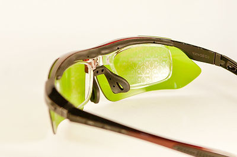
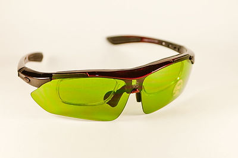
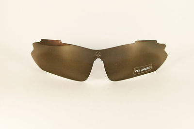
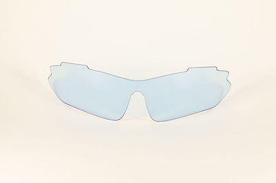

ОЧКИ «ЯЙ-ОСИДО» с цветными стеклами
 |
 |
|---|---|
 |
 |
 |
 |
|  |  |
(Патент № 86805 от 10.01.2014г. )
Инструкция
В основе разработки использован
Символ «ЯЙ-ОСИДО: ЗЕРКАЛО ЖИЗНИ»
Патент № 58256 от 11.04.2011
Научная основа разработки – рунные технологии В.П. Гоч и метод Психографии Я.С.Ибадова, результаты проведенных научных исследований, полученные современными инструментальными электрофизиологическими методами (ЭКГ, ЭЭГ, ЭМГ, Фолля, ГРВ), с помощью системы «AURA-Vibraimag», диагностического комплекса «Омега-2М» и методом информа-ционного контроля (торсионный фазовый портрет).
Символ «Яй-осидо-ЗеркалоЖизни» оказывает преобразующее и гармонизирующее воздействие на биологические объекты и окружающее пространство. Результатом воздействия гармонизатора на объект является восстановление информационных составляющих поля объекта во времени. Гармонизатор работает на энергоинформационном уровне через поля кручения, преобразуя негативную энергоинформацию, записанную на уровне ДНК. Он работает как зеркало для отражения от негативных энергоинформационных воздействий и как щит создает им барьер, оберегая человека. Восстанавливая энергоинформационную гармонию, «Зеркало Жизни помогает человеку подниматься на следующие квантовые уровни Бытия». В основе работы гармонизатора происходит коррекция метаморфоз времени систем на многомерном уровне. Гармонизатор синхронизирует внутреннее время человека со Вселенским Временем. Он помогает человеку гармонично войти в Новое Время.
Очки имеют комплект съемных цветных насадок с символом «Зеркало Жизни» .
В данных очках позитивное действие символа «Яй-осидо» сочетается с возможностями цветотерапии и это взаимодополняет и усиливает положительные эффекты.
Голубые – уменьшают воздействие электромагнитных излучений и защищают
органы зрения и головной мозг, нервную систему и психоэмоциональную сферу от внешних негативных факторов причины метаморфоз. Исследования показывают, что ношение очков за монитором компьютера сохраняет длительную работоспособность пользователя, снижает усталость глаз, поддерживается активная деятельность процессов мышления, памяти и внимания.
Рекомендуется ношение очков студентам, школьникам, людям, занимающимся научной деятельностью.
Зеленые – снижают психоэмоциональное напряжение, оказывают успокаивающий эффект, гармонизируют энергоинформационный баланс и гормональный фон женского организма. Улучшают работу сердечно-сосудистой системы, помогают для снижения артериального давления и частоты сердечных сокращений.
При стрессах, неврозах и неврозоподобных состояниях.
Желтые – антибликовые для водителей. Для предотвращения аварийности на дорогах. Ношение их при вождении автомобиля ускоряет реакцию водителя на ситуацию и сохраняет активность и устойчивость организма при длительных поездках. Отличие данных очков от до сих пор существующих антибликовых заключается в наличии насадок с символом «Яй-осидо», оказывающих одновременно восстанавливающий и лечебно-профилактический эффект.
Также рекомендуется применять их при астенических и депрессивных состояниях, т. к. желтый цвет тонизирует нервную систему, укрепляет психологический иммунитет.
Исследования показали, что ношение очков с желтыми линзами улучшает состояние пациентов с аллергическими кожными высыпаниями и при эксудативно-катаральных диатезах у детей. Улучшается деятельность печени и поджелудочной железы.
Фиолетовые – укрепляют энергоинформационный баланс у мужчин. Усиливают позитивные мужские качества. Помогают принятию правильных и быстрых решений. Снижают эмоциональное напряжение и укрепляют психологическую устойчивость. Помогают сохранить длительную активность и работоспособность.
Темные – предназначены для снижения воздействия солнечного, электромагнитного и других вредных для организма излучений. При повышенной светочувствительности и при аллергических заболеваний глаз.
Эти линзы имеют полароидный эффект, что реализует пространственное и стереоскопическое зрение.
При применении очков:
- снимается усталость глаз и улучшается зрение;
- повышается интеллектуальная и физическая работоспособность;
- сокращается время восстановления организма;
- повышаются адаптационные возможности.
Европейское признание
Изобретение было удостоено награды "Европейское качество" и лицензией Европейской Бизнес Ассамблеи из 28 стран Европы, Азии, Африки и Латинской Америки.
Данный приз и лицензия соответствуют уровню брендов Европы на изобретения.